<!DOCTYPE html>


<html lang="zh-CN">


<head>
  <meta name="baidu-site-verification" content="codeva-NSg7ynviLa" />
  <meta charset="utf-8" />
    
  <meta name="viewport" content="width=device-width, initial-scale=1, maximum-scale=1" />
  <title>
    plink软件备忘录 |  
  </title>
  <meta name="generator" content="hexo-theme-ayer">
  
  <link rel="shortcut icon" href="/images/mojie.jpg" />
  
  
<link rel="stylesheet" href="/dist/main.css">

  <link rel="stylesheet" href="https://cdn.jsdelivr.net/gh/Shen-Yu/cdn/css/remixicon.min.css">
  
<link rel="stylesheet" href="/css/custom.css">

  
  <script src="https://cdn.jsdelivr.net/npm/pace-js@1.0.2/pace.min.js"></script>
  
  

  

<link rel="alternate" href="/atom.xml" title="null" type="application/atom+xml">
</head>

</html>

<body>
  <div id="app">
    
      
    <main class="content on">
      <section class="outer">
  <article
  id="post-plink软件备忘录"
  class="article article-type-post"
  itemscope
  itemprop="blogPost"
  data-scroll-reveal
>
  <div class="article-inner">
    
    <header class="article-header">
       
<h1 class="article-title sea-center" style="border-left:0" itemprop="name">
  plink软件备忘录
</h1>
 

    </header>
     
    <div class="article-meta">
      <a href="/posts/18c130be/" class="article-date">
  <time datetime="2023-01-06T14:07:41.000Z" itemprop="datePublished">2023-01-06</time>
</a> 
  <div class="article-category">
    <a class="article-category-link" href="/categories/%E6%95%B0%E6%8D%AE%E5%88%86%E6%9E%90/">数据分析</a>
  </div>
  
<div class="word_count">
    <span class="post-time">
        <span class="post-meta-item-icon">
            <i class="ri-quill-pen-line"></i>
            <span class="post-meta-item-text"> 字数统计:</span>
            <span class="post-count">4.5k</span>
        </span>
    </span>

    <span class="post-time">
        &nbsp; | &nbsp;
        <span class="post-meta-item-icon">
            <i class="ri-book-open-line"></i>
            <span class="post-meta-item-text"> 阅读时长≈</span>
            <span class="post-count">18 分钟</span>
        </span>
    </span>
</div>
 
    </div>
      
    <div class="tocbot"></div>


  
    <div class="article-entry" itemprop="articleBody">
       
  <link rel="stylesheet" type="text/css" href="https://cdn.jsdelivr.net/hint.css/2.4.1/hint.min.css"><p>这是我个人使用的plink软件备忘录，将我所有会用到但是又没有完全记住的选项和功能记录在这里，方便查看。</p>
<span id="more"></span>
<h1>输入输出</h1>
<h2 id="输入">输入</h2>
<h3 id="compound格式">compound格式</h3>
<p>使用 <strong>–compound-genotypes</strong> 选项，读取 compound格式的plink文件（一个SNP的两个碱基之间没有空格）</p>
<figure class="highlight shell"><table><tr><td class="gutter"><pre><span class="line">1</span><br></pre></td><td class="code"><pre><span class="line">plink --file compound --compound-genotypes --recode --out new</span><br></pre></td></tr></table></figure>
<h3 id="二进制文件-bed">二进制文件(bed)</h3>
<p>查看plink2.0文章的算法部分，发现plink2.0 采用了<strong>按位运算</strong>，大大提高了计算效率。但是按位运算的前提是需要先把基因型文件转化为<strong>二进制</strong>格式。因此这里，需要介绍一下plink 生成的bed文件格式：</p>
<p>官方说明：<a target="_blank" rel="noopener" href="http://zzz.bwh.harvard.edu/plink/binary.shtml">http://zzz.bwh.harvard.edu/plink/binary.shtml</a></p>
<p>这个说明很详细，看这个就懂了。</p>
<p>首先，plink生成二进制文件时，同时会生成bim和fam文件。因此，plink 读取bed文件到的时候，同时也会读取 bim 和 fam 文件，获取<strong>snp和样本数目</strong>信息。</p>
<p>一个SNP的碱基信息会转化为2 bits。规则如下：</p>
<figure class="highlight plaintext"><table><tr><td class="gutter"><pre><span class="line">1</span><br><span class="line">2</span><br><span class="line">3</span><br><span class="line">4</span><br></pre></td><td class="code"><pre><span class="line">00  Homozygote &quot;1&quot;/&quot;1&quot; （first allele in .bim file）</span><br><span class="line"> 01  Heterozygote</span><br><span class="line"> 11  Homozygote &quot;2&quot;/&quot;2&quot;</span><br><span class="line"> 10  Missing genotype</span><br></pre></td></tr></table></figure>
<p>bed 文件将8个bits 作为一个 block (即一个字节)。一开始的三个block是由plink指定的，从第四个开始才开始记录基因型数据。</p>
<p>前两个 block 称为 magic number ，作用是用于plink软件来区分这个bed是不是真的bed文件。第三个 block 称为 mode ，表明这个bed文件是SNP-major(00000001) 还是 individual-major(0000000)，这个意思就是说数据按什么顺序排序，默认都是按照SNP的顺序，即先把bim文件中第一个SNP的所有基因型排列完，然后是第二个SNP，第三个SNP……（一直到最后，如果样本不能整除4，那么最后一个block多余的bits设为0，确保每一个新行都从一个新的block开始）。</p>
<figure class="highlight plaintext"><table><tr><td class="gutter"><pre><span class="line">1</span><br><span class="line">2</span><br><span class="line">3</span><br><span class="line">4</span><br><span class="line">5</span><br><span class="line">6</span><br><span class="line">7</span><br></pre></td><td class="code"><pre><span class="line">|-magic number--| |-mode-| |--genotype data---------| </span><br><span class="line"></span><br><span class="line">01101100 00011011 00000001 11011100 00001111 11100111</span><br><span class="line"></span><br><span class="line">|--genotype data-cont&#x27;d--| </span><br><span class="line"></span><br><span class="line">00001111 01101011 00000001 </span><br></pre></td></tr></table></figure>
<p>这里其相应的 bim 文件内容如下（<strong>A1 为等位基因频率较小的碱基</strong> ）</p>
<figure class="highlight plaintext"><table><tr><td class="gutter"><pre><span class="line">1</span><br><span class="line">2</span><br><span class="line">3</span><br></pre></td><td class="code"><pre><span class="line">1       snp1    0       1       G       A</span><br><span class="line">1       snp2    0       2       1       2</span><br><span class="line">1       snp3    0       3       A       C</span><br></pre></td></tr></table></figure>
<p>fam 文件如下</p>
<figure class="highlight plaintext"><table><tr><td class="gutter"><pre><span class="line">1</span><br><span class="line">2</span><br><span class="line">3</span><br><span class="line">4</span><br><span class="line">5</span><br><span class="line">6</span><br></pre></td><td class="code"><pre><span class="line">1 1 0 0 1 0</span><br><span class="line">1 2 0 0 1 0</span><br><span class="line">1 3 1 2 1 2</span><br><span class="line">2 1 0 0 1 0</span><br><span class="line">2 2 0 0 1 2</span><br><span class="line">2 3 1 2 1 2</span><br></pre></td></tr></table></figure>
<p>这里还有一个小问题是，<strong>在读取每个字节数据的时候</strong>是<strong>从后向前</strong>读的。如果把一个字节的8个位置<strong>从后到前</strong>标记伪 A 到 H，举例如下</p>
<figure class="highlight plaintext"><table><tr><td class="gutter"><pre><span class="line">1</span><br><span class="line">2</span><br></pre></td><td class="code"><pre><span class="line">01101100</span><br><span class="line">HGFEDCBA</span><br></pre></td></tr></table></figure>
<p>第一个SNP的前4个基因型则为 AB, CD,EF,GH 四个位置对应的分型，如下：</p>
<figure class="highlight shell"><table><tr><td class="gutter"><pre><span class="line">1</span><br><span class="line">2</span><br><span class="line">3</span><br><span class="line">4</span><br><span class="line">5</span><br><span class="line">6</span><br><span class="line">7</span><br></pre></td><td class="code"><pre><span class="line">01101100</span><br><span class="line">HGFEDCBA</span><br><span class="line"></span><br><span class="line">      AB   00  -- homozygote (first)</span><br><span class="line">    CD     11  -- other homozygote (second)</span><br><span class="line">  EF       01  -- heterozygote (third)</span><br><span class="line">GH         10  -- missing genotype (fourth)</span><br></pre></td></tr></table></figure>
<p>上面例子中的 3 个位点的解析如下，第一个SNP的 A1 和 A2 碱基为 G 和 A ，因此 00 对应 GG，01 对应 GA ，11 对应 GG ，10 对应缺失。由于这里总共是 6 个样本，因此一个 SNP 需要占用 2 个字节，第<strong>二个字节多余的位置使用 00 填充</strong>。</p>
<p>因此第一个SNP的第一个样本是GG，之后是AA,00, AA, AA, AA。</p>
<figure class="highlight plaintext"><table><tr><td class="gutter"><pre><span class="line">1</span><br><span class="line">2</span><br><span class="line">3</span><br><span class="line">4</span><br><span class="line">5</span><br><span class="line">6</span><br><span class="line">7</span><br><span class="line">8</span><br><span class="line">9</span><br><span class="line">10</span><br><span class="line">11</span><br><span class="line">12</span><br><span class="line">13</span><br><span class="line">14</span><br><span class="line">15</span><br><span class="line">16</span><br><span class="line">17</span><br><span class="line">18</span><br><span class="line">19</span><br><span class="line">20</span><br><span class="line">21</span><br><span class="line">22</span><br><span class="line">23</span><br><span class="line">24</span><br><span class="line">25</span><br><span class="line">26</span><br><span class="line">27</span><br><span class="line">28</span><br><span class="line">29</span><br><span class="line">30</span><br><span class="line">31</span><br><span class="line">32</span><br><span class="line">33</span><br><span class="line">34</span><br><span class="line">35</span><br><span class="line">36</span><br><span class="line">37</span><br><span class="line">38</span><br><span class="line">39</span><br><span class="line">40</span><br><span class="line">41</span><br><span class="line">42</span><br><span class="line">43</span><br><span class="line">44</span><br><span class="line">45</span><br><span class="line">46</span><br><span class="line">47</span><br><span class="line">48</span><br></pre></td><td class="code"><pre><span class="line"></span><br><span class="line">           Genotype    Person    SNP</span><br><span class="line">11011100 </span><br><span class="line"></span><br><span class="line">      00   G/G         1 1       snp1</span><br><span class="line">    11     A/A         1 2       snp1</span><br><span class="line">  10       0/0         1 3       snp1</span><br><span class="line">11         A/A         2 1       snp1</span><br><span class="line"></span><br><span class="line"></span><br><span class="line">00001111 </span><br><span class="line"></span><br><span class="line">      11   A/A         2 2       snp1</span><br><span class="line">    11     A/A         2 3       snp1</span><br><span class="line">  00       (null)</span><br><span class="line">00         (null)</span><br><span class="line"></span><br><span class="line"></span><br><span class="line">11100111</span><br><span class="line">      </span><br><span class="line">      11   2/2         1 1       snp2</span><br><span class="line">    10     0/0         1 2       snp2</span><br><span class="line">  01       1/2         1 3       snp2</span><br><span class="line">11         2/2         2 1       snp2</span><br><span class="line"></span><br><span class="line"></span><br><span class="line">00001111 </span><br><span class="line">  </span><br><span class="line">      11   2/2         2 2       snp2</span><br><span class="line">    11     2/2         2 3       snp2</span><br><span class="line">  00       (null) </span><br><span class="line">00         (null)</span><br><span class="line"></span><br><span class="line"></span><br><span class="line">01101011</span><br><span class="line"></span><br><span class="line">      11   C/C         1 1       snp3</span><br><span class="line">    01     A/C         1 2       snp3</span><br><span class="line">  01       A/C         1 3       snp3</span><br><span class="line">10         0/0         2 1       snp3</span><br><span class="line"></span><br><span class="line"></span><br><span class="line">00000001</span><br><span class="line"></span><br><span class="line">      10   0/0         2 2       snp3</span><br><span class="line">    00     A/A         2 3       snp3</span><br><span class="line">  00       (null)</span><br><span class="line">00         (null)</span><br></pre></td></tr></table></figure>
<h3 id="VCF-文件">VCF 文件</h3>
<p>联合使用 <strong>–vcf filename</strong> 和 <strong>–const-fid</strong> 来读取 vcf 文件，这里  <strong>–const-fid</strong>  是将所有个体的家系号均设为 0 。</p>
<p>注意 VCF 文件作为 plink 的输入文件，<strong>其位点必须严格按照物理位置顺序排序</strong>，不然就会遇到下面的报错。</p>
<figure class="highlight shell"><table><tr><td class="gutter"><pre><span class="line">1</span><br><span class="line">2</span><br></pre></td><td class="code"><pre><span class="line">Error: .bim file has a split chromosome.  Use --make-bed by itself to</span><br><span class="line">remedy this.</span><br></pre></td></tr></table></figure>
<p>你需要先用 <strong>–make-bed</strong> 生成标准的二进制文件（排序好的），再进行其他处理。</p>
<h2 id="输出">输出</h2>
<h3 id="compound格式-2">compound格式</h3>
<p>使用 <strong>–recode compound-genotypes</strong> 选项，生成 compound格式的plink文件（一个SNP的两个碱基之间没有空格）</p>
<figure class="highlight plaintext"><table><tr><td class="gutter"><pre><span class="line">1</span><br></pre></td><td class="code"><pre><span class="line">plink --allow-extra-chr --chr-set 95 --file plink59 --recode compound-genotypes --out plink59_compound</span><br></pre></td></tr></table></figure>
<h3 id="012格式">012格式</h3>
<p>使用 <code>--recodeA</code> 选项可以输出 012 格式的基因型文件，默认是按照 A1 (最小等位基因) 进行计数。</p>
<p>可以通过添加 <code>--recode-allele</code> 选项指定每一个 SNP 是计数哪一个碱基，其后面接着输入文件名称，这个输入文件含有两列，第一列是 SNP 名称，第二列是需要计数的碱基。</p>
<p>举例如下</p>
<figure class="highlight bash"><table><tr><td class="gutter"><pre><span class="line">1</span><br></pre></td><td class="code"><pre><span class="line">plink --allow-extra-chr --chr-set 95 --file 1 --recode-allele count_allele.txt --recodeA --out 1_count</span><br></pre></td></tr></table></figure>
<p>其中的 count_allele.txt 文件内容如下</p>
<figure class="highlight plaintext"><table><tr><td class="gutter"><pre><span class="line">1</span><br><span class="line">2</span><br><span class="line">3</span><br><span class="line">4</span><br><span class="line">5</span><br></pre></td><td class="code"><pre><span class="line">1_242598	C</span><br><span class="line">1_10673082	T</span><br><span class="line">1_10723065	T</span><br><span class="line">1_11407894	A</span><br><span class="line">1_11426075	C</span><br></pre></td></tr></table></figure>
<h3 id="VCF-文件-2">VCF 文件</h3>
<p>使用 <strong>–recode vcf-iid</strong> 输出为 VCF 文件。</p>
<p>这里 vcf-iid 含义是只使用个体号作为 VCF 文件中的样本号，如果仅仅是 --recode vcf，那么生成的VCF文件的样本号是家系号和个体号合并的结果（以_连接） 。</p>
<p>需要注意的是，plink 默认会将等位基因频率高的碱基 (A2) 设置为 ref ，将等位基因频率低的碱基 (A1) 设置为 alt 。如果你需要指定每个位点 的 ref 和 alt ，比如你可以设置与某一个 VCF 中的 ref 和 alt 保持一致，你可以添加一下选项：</p>
<figure class="highlight plaintext"><table><tr><td class="gutter"><pre><span class="line">1</span><br></pre></td><td class="code"><pre><span class="line">--a2-allele ref.vcf 4 3 &#x27;#&#x27;</span><br></pre></td></tr></table></figure>
<p>参数说明：</p>
<p><code>--a2-allele ref.vcf 4 3 '#'</code> :</p>
<p>​	<code>--a2-allele</code> 命令表示 指定A2基因（Major）</p>
<p>​	<code>ref.vcf</code>  是参考群体的vcf文件（必须是未压缩文件）</p>
<p>​	<code>4</code> 是参考群体A2基因所在列</p>
<p>​	<code>3</code> 是SNP名称列</p>
<p>​	<code>#</code> 是需要跳过的行</p>
<p>需要注意的地方如下</p>
<ol>
<li><strong>ref.vcf 和 plink 文件中的染色体，snp名称，物理位置，两个碱基必须一致</strong></li>
<li>需要转换的 plink 文件中的位点必须均在 ref.vcf 中。</li>
</ol>
<h3 id="位点顺序">位点顺序</h3>
<p>经过 plink 处理之后，<strong>位点会按照物理位置排序</strong>。</p>
<h3 id="样本顺序">样本顺序</h3>
<h4 id="按照特定样本顺序排序">按照特定样本顺序排序</h4>
<p><strong>除了merge操作外，plink 不会改变样本顺序，会保持原顺序</strong>。</p>
<p>如果想要改变样本顺序，那么可以使用 <strong>–indiv-sort &lt;mode name&gt; [filename]</strong> 选项，这个选项有 4 种模式，说明如下：</p>
<ul>
<li>
<p>'‘<strong>none</strong>’/‘<strong>0</strong>’: 保持原顺序。这是 PLINK 1.9 中 <strong>除merge</strong> 外的所有操作的默认值。</p>
</li>
<li>
<p>‘<strong>natural</strong>’/‘<strong>n</strong>’:  按照家系号和个体号排序，这是<strong>PLINK 1.9 在merge操作中的默认值</strong>。举例如下</p>
<blockquote>
<p>‘id2’ &lt; ‘ID3’ &lt; ‘id10’</p>
</blockquote>
</li>
<li>
<p>‘<strong>ascii</strong>’/‘<strong>a</strong>’:  同样按照家系号和个体号排序，不过是按照 ASCII 码。举例如下</p>
<blockquote>
<p>‘ID3’ &lt; ‘id10’ &lt; ‘id2’</p>
</blockquote>
</li>
<li>
<p>‘<strong>file</strong>’/‘<strong>f</strong>’:  采用另一个文件中的顺序。这个文件前两列是家系号-个体号，<strong>空格或tab</strong>分隔。</p>
</li>
</ul>
<p>如果想要使用 file 模式来改变样本顺序，先生成二进制文件，再生成正常的plink格式，分两步走。</p>
<figure class="highlight shell"><table><tr><td class="gutter"><pre><span class="line">1</span><br><span class="line">2</span><br><span class="line">3</span><br><span class="line">4</span><br><span class="line">5</span><br></pre></td><td class="code"><pre><span class="line">plink --allow-extra-chr --chr-set 95 --chr 1-18 --file raw --indiv-sort file keep_id.txt --make-bed --out sorted</span><br><span class="line"><span class="meta prompt_"></span></span><br><span class="line"><span class="meta prompt_">#</span><span class="language-bash"><span class="comment"># --indiv-sort 只能生成二进制文件，但是顺序果然是一样的。</span></span></span><br><span class="line"></span><br><span class="line">plink --allow-extra-chr --chr-set 95 --bfile sorted --recode --out sorted</span><br></pre></td></tr></table></figure>
<h4 id="merge操作后样本顺序">merge操作后样本顺序</h4>
<p>merge 后得到的 plink 文件，<strong>其默认会按照家系号和个体号排序</strong>，即 <strong>–indiv-sort</strong> 中的 <strong>natural</strong> 模式。</p>
<h1>质控</h1>
<h2 id="样本质控">样本质控</h2>
<p>除了常规的 call rate 之外，还有<strong>杂合子比例</strong>，<strong>性别检查</strong>，<strong>PCA分析剔除离群样本</strong>，<strong>IBS和IBD</strong>。</p>
<h3 id="杂合子比例">杂合子比例</h3>
<p>使用选项 <strong>–het</strong> 。如果杂合子比例过高，可能是样本污染；如果杂合子比例过低，可能是近交造成的。</p>
<p>建议<strong>先根据 LD 质控</strong>（<strong>–indep-pairwise 50 5 0.2</strong>），只使用独立的位点计算样本杂合子比例。</p>
<p>结果文件后缀为 <code>.het</code> ，其内容举例如下，这里 O(HOM) 是样本的纯合子比例，E(HOM) 是期望的纯合子比例，N(NM) 是剔除缺失后的位点总数，根据 plink 官方文档 F 系数计算公式为  <code>(&lt;observed hom. count&gt; - &lt;expected count&gt;) / (&lt;total observations&gt; - &lt;expected count&gt;)</code></p>
<table>
<thead>
<tr>
<th>FID</th>
<th>IID</th>
<th>O(HOM)</th>
<th>E(HOM)</th>
<th>N(NM)</th>
<th>F</th>
</tr>
</thead>
<tbody>
<tr>
<td>0</td>
<td>1</td>
<td>30340</td>
<td>2.92E+04</td>
<td>45590</td>
<td>0.0693</td>
</tr>
<tr>
<td>0</td>
<td>2</td>
<td>28816</td>
<td>2.92E+04</td>
<td>45588</td>
<td>-0.02362</td>
</tr>
</tbody>
</table>
<p>因此每个样本的杂合子比例计算公式为：  ，有人建议剔除群体杂合子比例均值的 3 倍标准差之外的样本。</p>
<h3 id="性别检查">性别检查</h3>
<p>使用 <strong>–check-sex</strong> 选项， 使用 X 染色体上的位点检查性别，看 F 值，大于0.8为公，反之为母（一般小于0.2），0.2 到 0.8 之间的个体性别会标记为 “PROBLEM” 。</p>
<p>这个 F 值是根据 X 染色体上的近交系数（纯合子比例）得到的，所以需要事先<strong>剔除 X 染色体上的伪常染色体区域的位点</strong>。</p>
<figure class="highlight shell"><table><tr><td class="gutter"><pre><span class="line">1</span><br></pre></td><td class="code"><pre><span class="line">plink --chr-set 95 --allow-extra-chr --file all_sex_maf --check-sex --out all_sex_maf</span><br></pre></td></tr></table></figure>
<h3 id="离群个体">离群个体</h3>
<p>使用 <code>--pca</code> 进行 PCA 分析，根据散点图手动剔除离群个体。</p>
<h3 id="IBS-和-IBD">IBS 和 IBD</h3>
<h4 id="IBS">IBS</h4>
<p>IBS 就是样本间同态相同的比例，实际计算两个样本间相同碱基的比例。</p>
<p>首先我们先看一个位点的情况，下面的 IBS Count 就是两个个体在这个位点中的共同的碱基数目。</p>
<table>
<thead>
<tr>
<th>个体1</th>
<th>个体2</th>
<th>IBS State</th>
</tr>
</thead>
<tbody>
<tr>
<td>AA</td>
<td>AA</td>
<td>2</td>
</tr>
<tr>
<td>AA</td>
<td>Aa</td>
<td>1</td>
</tr>
<tr>
<td>AA</td>
<td>aa</td>
<td>0</td>
</tr>
</tbody>
</table>
<p>扩展到多个位点，IBS 计算公式如下：</p>
<p style=""></p><p>plink 计算 IBS 利用 <strong>–distance ibs</strong> 选项，生成 <code>.mibs</code> 为后缀的结果文件，例如</p>
<figure class="highlight shell"><table><tr><td class="gutter"><pre><span class="line">1</span><br></pre></td><td class="code"><pre><span class="line">plink --allow-extra-chr --chr-set 95 --file hapmap1 --distance square ibs flat-missing</span><br></pre></td></tr></table></figure>
<p>其中 <strong>square</strong> 指输出文件为矩阵格式，<strong>flat-missing</strong> 就是对应地从分母剔除缺失位点。</p>
<h4 id="IBD">IBD</h4>
<p>IBS 就是样本间同源相同的比例，其不仅仅是具有相同的等位基因，而且要来自于同一祖先。</p>
<p>通常 IBD 无法观测得到，PLINK 通过隐马尔科夫模型来计算 IBD = 0,1,2 的概率，然后计算 PI_HAT 作为 IBD 估计值，其计算公式类似 IBS ，即 P(IBD=2) + 0.5 P(IBD=1) 。</p>
<p>建议<strong>先根据 LD 质控</strong>（<strong>–indep-pairwise 50 5 0.2</strong>），只使用独立的位点计算样本杂合子比例。</p>
<p>在 plink 中使用 <strong>–genome</strong> 选项来计算 IBD ，还可以通过 <strong>–min &lt;minimum PI_HAT value&gt;</strong> 和 <strong>—max &lt;maximum PI_HAT value&gt;</strong> 来移除 PI_HAT 小于或大于某个值的样本对的行（例如 <strong>–min 0.2</strong>）。</p>
<p>输出结果后缀为 <code>.genome</code> ，其各列内容解释如下，这里主要关注 Z0,Z1,Z2,PI_HAT,DST (这就是 IBS) 。</p>
<p>由于输出文件中包含所有样本两两配对的结果，因此文件会比较大。</p>
<figure class="highlight plaintext"><table><tr><td class="gutter"><pre><span class="line">1</span><br><span class="line">2</span><br><span class="line">3</span><br><span class="line">4</span><br><span class="line">5</span><br><span class="line">6</span><br><span class="line">7</span><br><span class="line">8</span><br><span class="line">9</span><br><span class="line">10</span><br><span class="line">11</span><br><span class="line">12</span><br><span class="line">13</span><br><span class="line">14</span><br><span class="line">15</span><br></pre></td><td class="code"><pre><span class="line"></span><br><span class="line">FID1	Family ID for first sample</span><br><span class="line">IID1	Individual ID for first sample</span><br><span class="line">FID2	Family ID for second sample</span><br><span class="line">IID2	Individual ID for second sample</span><br><span class="line">RT	Relationship type inferred from .fam/.ped file</span><br><span class="line">EZ	IBD sharing expected value, based on just .fam/.ped relationship</span><br><span class="line">Z0	P(IBD=0)</span><br><span class="line">Z1	P(IBD=1)</span><br><span class="line">Z2	P(IBD=2)</span><br><span class="line">PI_HAT	Proportion IBD, i.e. P(IBD=2) + 0.5*P(IBD=1)</span><br><span class="line">PHE	Pairwise phenotypic code (1, 0, -1 = AA, AU, and UU pairs, respectively)</span><br><span class="line">DST	IBS distance, i.e. (IBS2 + 0.5*IBS1) / (IBS0 + IBS1 + IBS2)</span><br><span class="line">PPC	IBS binomial test</span><br><span class="line">RATIO	HETHET : IBS0 SNP ratio (expected value 2)</span><br></pre></td></tr></table></figure>
<h4 id="三种亲缘关系的IBD测试">三种亲缘关系的IBD测试</h4>
<p>路径：/mnt/data/zhouziwen/test/isolate/2021/2021-03-25-plink_test/IBD</p>
<p>同时使用杜长大三个品种的数据（总共样本数目为 3150），其系谱均检验均正确，<strong>质控 LD 后剩余 5260 个位点</strong>，使用这些位点计算 IBD，查看亲子、全同胞及半同胞三种亲缘关系的样本间的情况 。</p>
<p>按照理论来说，这三种亲缘关系的 Z0,Z1,Z2 和 PI_HAT的期望为</p>
<table>
<thead>
<tr>
<th></th>
<th>Z0</th>
<th>Z1</th>
<th>Z2</th>
<th>PI_HAT</th>
</tr>
</thead>
<tbody>
<tr>
<td>亲子</td>
<td>0</td>
<td>1</td>
<td>0</td>
<td>0.5</td>
</tr>
<tr>
<td>全同胞</td>
<td>0.25</td>
<td>0.5</td>
<td>0.25</td>
<td>0.5</td>
</tr>
<tr>
<td>半同胞</td>
<td>0.5</td>
<td>0.5</td>
<td>0</td>
<td>0.25</td>
</tr>
</tbody>
</table>
<p>下面是亲子的直方图，所有样本 Z0 均接近于 0，Z1 较大，但是 Z2 并不等于 0 。</p>
<p>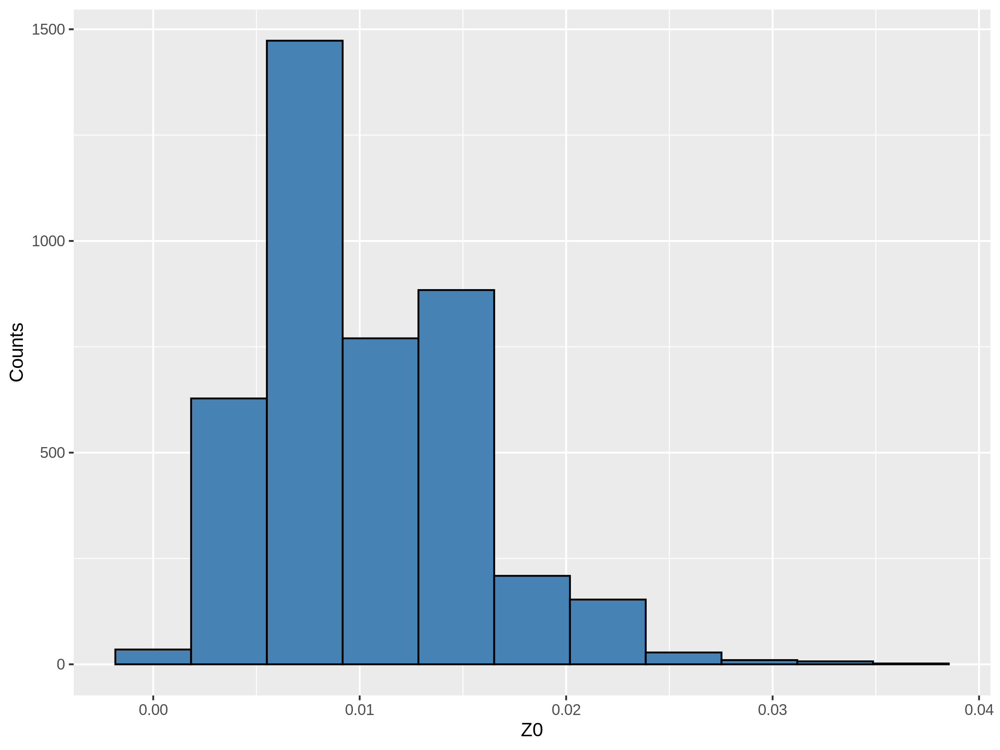</p>
<p>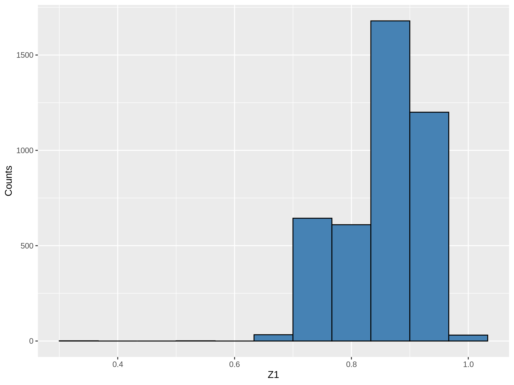</p>
<p>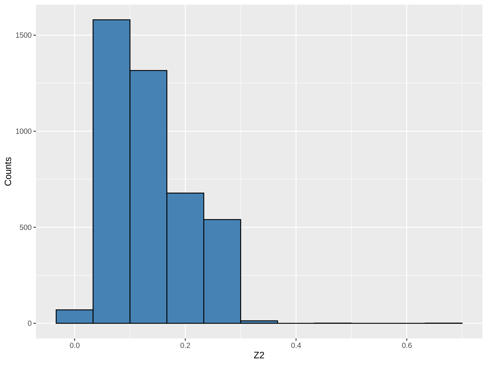</p>
<p>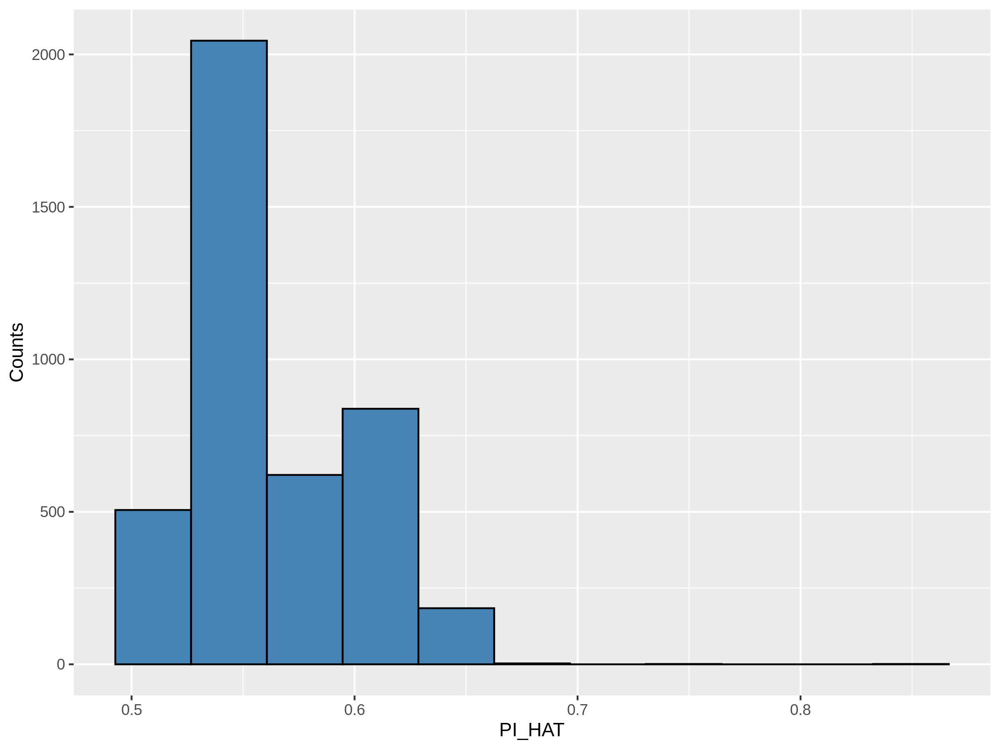</p>
<p><strong>全同胞的结果如下</strong></p>
<p>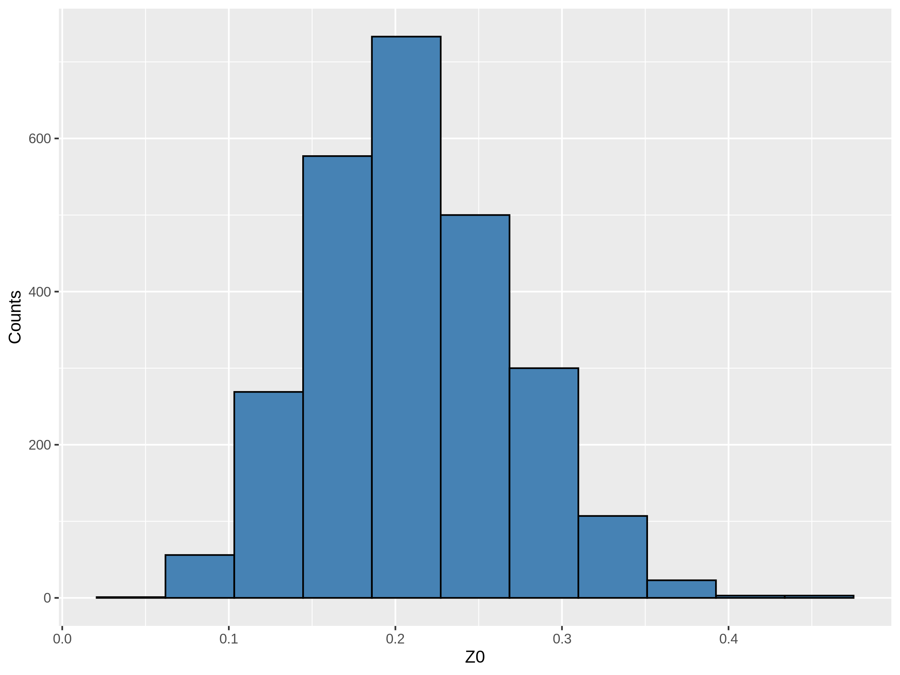</p>
<p>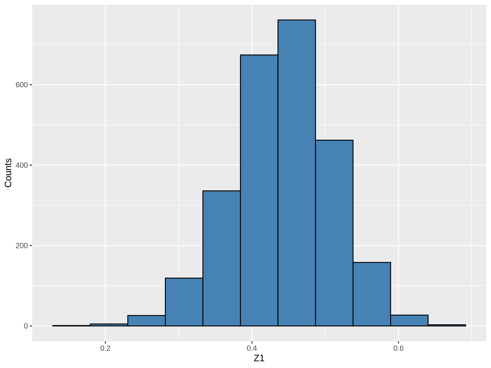</p>
<p>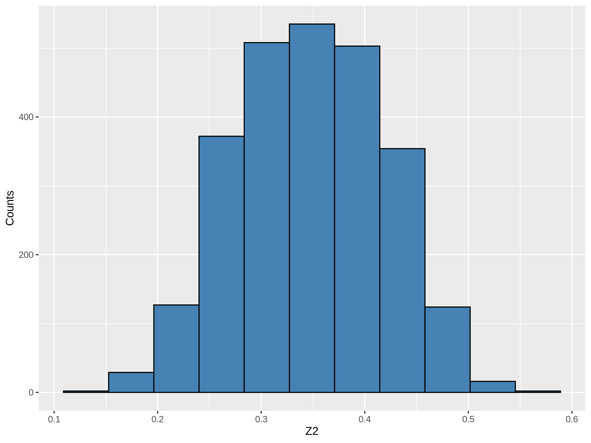</p>
<p>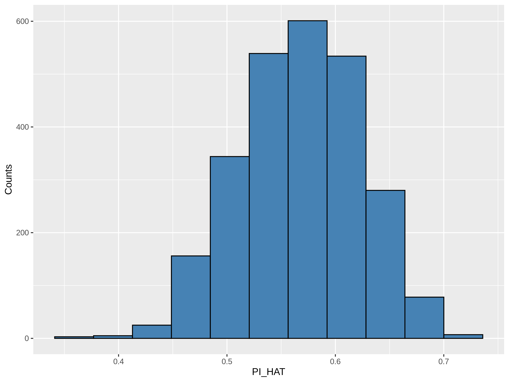</p>
<p><strong>半同胞的结果如下</strong></p>
<p>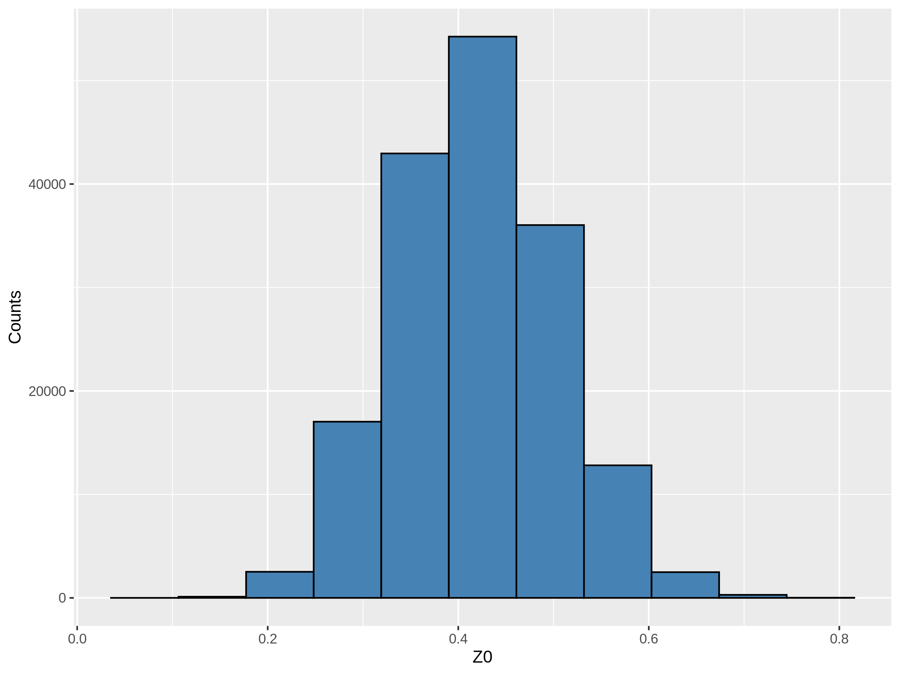</p>
<p>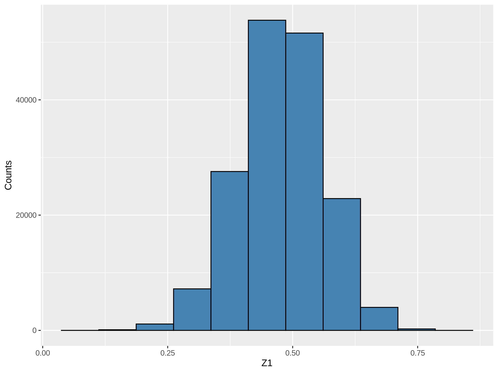</p>
<p>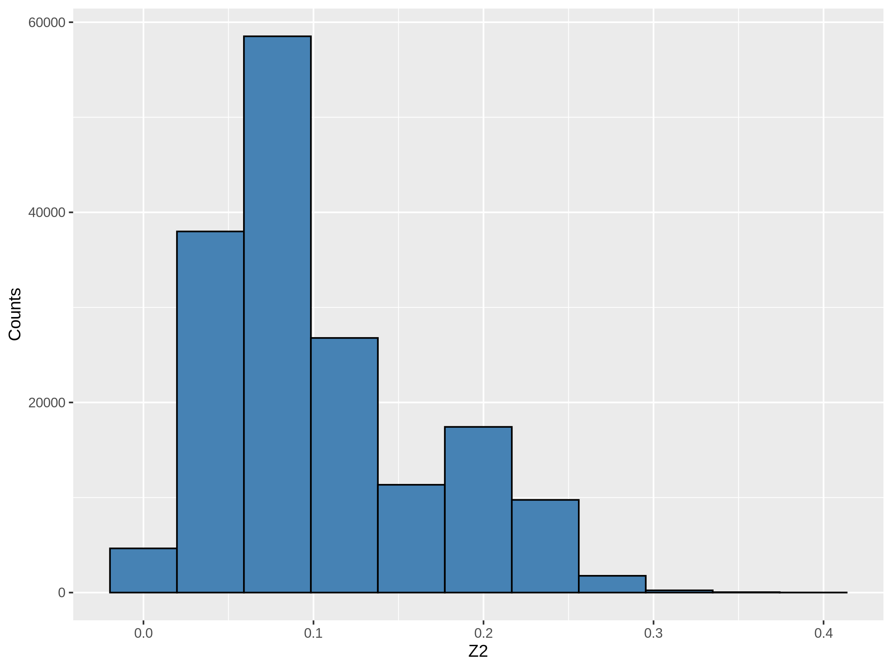</p>
<p>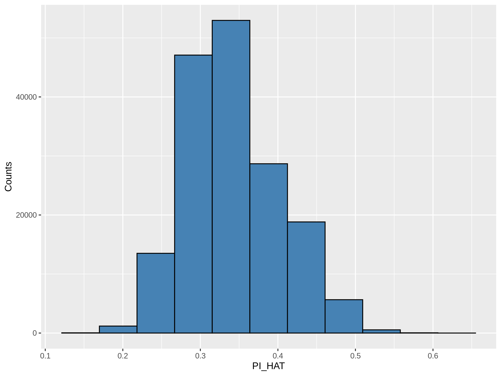</p>
<h4 id="测试结论">测试结论</h4>
<ol>
<li>
<p>三种关系中 ，<strong>Z2 值均偏大</strong>，远高于期望值，因此这里的 IBD 算法不够精确。</p>
</li>
<li>
<p>三种关系中 ，<strong>PI_HAT 值均偏大</strong>，远高于期望值，估计是收到了 Z2 值偏大的影响。</p>
</li>
<li>
<p>这里最好区分的是<strong>亲子关系</strong>，其 Z0 值接近于 0，Z1 值均大于 0.6 。但是这里半同胞和全同胞的 PI_HAT 的分布有交叉，无法完全分开。</p>
</li>
<li>
<p>总体来说，IBD 的计算结果只能说勉强符合要求，应该只能用于筛选样本，比如挑选或剔除亲缘关系比较近的样本对。</p>
</li>
<li>
<p><strong>计算 IBD 前必须根据 LD 质控位点</strong>，不然得到的结果更加糟糕。</p>
</li>
</ol>
<h2 id="位点质控">位点质控</h2>
<h3 id="杂合子比例-2">杂合子比例</h3>
<p>位点杂合子比例可以通过 <code>--hardy</code> 进行计算，输出文件后缀维 <code>.hwe</code> ，内容举例如下。</p>
<p>其中 <strong>O(HET)</strong> 便是位点的观察杂合度，GENO 的三个数值对应着 A1A1,A1A2,A2A2 三种基因型的数目。</p>
<table>
<thead>
<tr>
<th>CHR</th>
<th>SNP</th>
<th>TEST</th>
<th>A1</th>
<th>A2</th>
<th>GENO</th>
<th>O(HET)</th>
<th>E(HET)</th>
<th>P</th>
</tr>
</thead>
<tbody>
<tr>
<td>0</td>
<td>snp1</td>
<td>ALL(NP)</td>
<td>T</td>
<td>C</td>
<td>4337/533/26259</td>
<td>0.01712</td>
<td>0.252</td>
<td>0</td>
</tr>
<tr>
<td>0</td>
<td>snp2</td>
<td>ALL(NP)</td>
<td>G</td>
<td>T</td>
<td>8035/1174/22550</td>
<td>0.03697</td>
<td>0.3956</td>
<td>0</td>
</tr>
</tbody>
</table>
<h3 id="剔除多等位基因位点">剔除多等位基因位点</h3>
<p>使用 <strong>–snps-only just-acgt</strong> 选项会剔除非 SNP 位点（例如 indel 位点），对于存在三等位基因的 SNP ，会将存在三等位基因的基因型替换为0。</p>
<p>举个例子，输入文件，第一个SNP是<strong>一等位基因</strong>，第二个SNP是<strong>三等位基因</strong>，第三个SNP是<strong>INDEL</strong> 位点。</p>
<blockquote>
<p>1 1 0 0 0 0 A A A C I D<br>
2 2 0 0 0 0 A A A T D D<br>
3 3 0 0 0 0 A A T T D D<br>
4 4 0 0 0 0 A A A T D D</p>
</blockquote>
<p>输出文件，保留了第一个SNP（<strong>即会保留无变异的位点</strong>），第二个SNP将存在三等位基因的基因型替换为0，直接剔除了第三个SNP。</p>
<blockquote>
<p>1 1 0 0 0 -9 A A 0 0<br>
2 2 0 0 0 -9 A A A T<br>
3 3 0 0 0 -9 A A T T<br>
4 4 0 0 0 -9 A A A T</p>
</blockquote>
<p>注意：<strong>–make-bed</strong> 默认就会执行 <strong>–snps-only</strong>，因此如果生成二进制文件过程中出现多等位基因的 SNP ，不会报错，只会给出下面的提示：</p>
<figure class="highlight shell"><table><tr><td class="gutter"><pre><span class="line">1</span><br></pre></td><td class="code"><pre><span class="line">Warning: Variant 1 triallelic; setting rarest alleles missing.</span><br></pre></td></tr></table></figure>
<h3 id="LD-过滤">LD 过滤</h3>
<p>使用 <strong>–indep-pairwise &lt;window size&gt;[‘kb’] &lt;step size (variant ct)&gt; &lt;r^2 threshold&gt;</strong> 选项来过滤位点，常用参数组合为 <strong>50 5 0.5</strong> 或 <strong>50 5 0.2</strong> ，一般不动前面两个参数，修改第三个的值。</p>
<p>这三个参数说明如下：</p>
<ul>
<li>窗口大小，单位 Kb</li>
<li>步长，单位位点数目，表示每次计算后移动窗口的位点数目</li>
<li>r2 阈值</li>
</ul>
<h1>其它</h1>
<h2 id="flip-翻转位点">flip-翻转位点</h2>
<p>合并失败，首先检查是不是存在正反链问题（查看bim文件），如果是正反链问题，用 flip 命令进行部分位点的翻转。如果不是，估计就是基因型文件分型出问题了。</p>
<figure class="highlight plaintext"><table><tr><td class="gutter"><pre><span class="line">1</span><br></pre></td><td class="code"><pre><span class="line">-- flip &lt;SNP ID list&gt;</span><br></pre></td></tr></table></figure>
<p>Given a file containing a list of SNPs with A/C/G/T alleles, <strong>–flip</strong> swaps A↔T and C↔G. A warning will be given if any alleles are not named A, C, G, or T.</p>
<h2 id="merge-注意事项">merge 注意事项</h2>
<p>使用 <strong>–merge</strong> 合并时有以下注意事项：</p>
<ol>
<li>
<p>合并后的基因型文件位点是所有被合并的基因型文件位点的<strong>并集</strong>，不存在的位点基因型会设为缺失。</p>
</li>
<li>
<p><strong>如果多个被合并文件中存在共同样本（最好事先避免这一点）</strong>，在第一个文件中已经存在的标记数据，默认情况下不会被第二个文件覆盖。例如第一个文件某个体某snp为AA，第二个文件该个体该SNP为AG，最终合并文件中还是AA。覆盖情况可以通过–merge-mode调整。</p>
</li>
<li>
<p><strong>不同map相同snp的名称必须保持一致</strong>，不然会被 plink 软件视为不同的位点。</p>
</li>
<li>
<p>两个芯片文件的snp编码方式要保持一致，比如不能一个ACGT，一个1234。</p>
</li>
</ol>
<h2 id="计算位点间的-r2">计算位点间的 r2</h2>
<h3 id="r2-和-D’-定义">r2 和 D’ 定义</h3>
<p>首先我们先看一下理论，首先我们假设有两个位点，其等位基因分别为 Aa, Bb</p>
<table>
<thead>
<tr>
<th></th>
<th></th>
<th></th>
<th></th>
<th></th>
</tr>
</thead>
<tbody>
<tr>
<td>等位基因</td>
<td>A</td>
<td>a</td>
<td>B</td>
<td>b</td>
</tr>
<tr>
<td>等位基因频率</td>
<td></td>
<td></td>
<td></td>
<td></td>
</tr>
<tr>
<td>配子类型</td>
<td>AB</td>
<td>Ab</td>
<td>aB</td>
<td>ab</td>
</tr>
<tr>
<td>连锁平衡时的理论频率</td>
<td></td>
<td></td>
<td></td>
<td></td>
</tr>
<tr>
<td>实际频率</td>
<td>r</td>
<td>s</td>
<td>t</td>
<td>u</td>
</tr>
<tr>
<td>偏离值</td>
<td>+D</td>
<td>-D</td>
<td>-D</td>
<td>+D</td>
</tr>
</tbody>
</table>
<p>首先我们可以先求出所有样本中所有位点的等位基因频率，就是这里的 <em>p<sub>A</sub></em>  <em>q<sub>A</sub></em>  <em>p<sub>B</sub></em>  <em>q<sub>B</sub></em> 。</p>
<p>如果这两个位点之间不存在连锁，那么这两个位点的组合的频率应该正好等于位点等位基因之和，例如 P(AB) = P(A)P(B) （孟德尔的自由组合定律）。</p>
<p>这里我们计算出第一个统计量，D 值 <strong>(连锁不平衡系数，coefficient of linkage disequilibrium）</strong>，其计算公式为（缺证明）</p>
<p style=""></p><p>如果连锁平衡，则  。</p>
<p>r2 计算公式为</p>
<p style=""></p><p>这里<strong>r 是两个位点之间的相关系数</strong>（缺证明）</p>
<p>D’ 定义如下，这里  是  可以取到的最大值。D’ 取值范围同样为 [0,1]。 当等位基因频率较低时，D’ 有偏，偏高。</p>
<p style=""></p><h2 id="计算-r2">计算 r2</h2>
<p>使用 <strong>–r2</strong> 计算位点间碱基计数的相关系数的平方看，举例如下，会生成 <code>.ld</code> 为后缀的结果文件。</p>
<figure class="highlight shell"><table><tr><td class="gutter"><pre><span class="line">1</span><br></pre></td><td class="code"><pre><span class="line">plink --allow-extra-chr --chr-set 95 --file pick --r2</span><br></pre></td></tr></table></figure>
<p>可以设置一下过滤的参数</p>
<ul>
<li>
<p>–ld-window 10  ：表示计算LD的区间（SNP数目，默认为10），表示距离小于这个值的标记对都要进行LD的计算。</p>
</li>
<li>
<p>–ld-window-kb 1000 ：默认为1Mb，表示只对距离在1Mb之内的SNP位点进行分析。</p>
</li>
<li>
<p>–ld-window-r2 0.2 ：这个参数只能和 --r2参数搭配使用，默认值为0.2对输出结果进行过滤，只输出r2大于该参数的r2值</p>
</li>
</ul>
<p>如果按照默认参数，就是<strong>只算两个位点对距离小于1000kb，中间间隔的SNP数目小于9（10-1）的位点对的r2</strong>，<strong>并且只输出 r2 大于 0.2 的结果</strong>。</p>
 
      <!-- reward -->
      
    </div>
    

    <!-- copyright -->
    
    <div class="declare">
      <ul class="post-copyright">
        <li>
          <i class="ri-copyright-line"></i>
          <strong>版权声明： </strong>
          
          本博客所有文章除特别声明外，著作权归作者所有。转载请注明出处！
          
        </li>
      </ul>
    </div>
    
    <footer class="article-footer">
       
  <ul class="article-tag-list" itemprop="keywords"><li class="article-tag-list-item"><a class="article-tag-list-link" href="/tags/%E6%95%B0%E6%8D%AE%E5%88%86%E6%9E%90/" rel="tag">数据分析</a></li></ul>

    </footer>
  </div>

   
  <nav class="article-nav">
    
      <a href="/posts/81382537/" class="article-nav-link">
        <strong class="article-nav-caption">上一篇</strong>
        <div class="article-nav-title">
          
            python基础及标准库
          
        </div>
      </a>
    
    
      <a href="/posts/ad8683e2/" class="article-nav-link">
        <strong class="article-nav-caption">下一篇</strong>
        <div class="article-nav-title">windows下运行R-python-dmu-blupf90</div>
      </a>
    
  </nav>

   
<!-- valine评论 -->
<div id="vcomments-box">
  <div id="vcomments"></div>
</div>
<script src="//cdn1.lncld.net/static/js/3.0.4/av-min.js"></script>
<script src="https://cdn.jsdelivr.net/npm/valine@1.4.14/dist/Valine.min.js"></script>
<script>
  new Valine({
    el: "#vcomments",
    app_id: "yHN3kf7fHt5wvleM2DVoHLdY-gzGzoHsz",
    app_key: "RPIwmdftljIzOtAULwc7JCAp",
    path: window.location.pathname,
    avatar: "monsterid",
    placeholder: "靓仔，看完留个评论再走哇！\n只需要填入昵称和邮箱就可以了",
    recordIP: true,
  });
  const infoEle = document.querySelector("#vcomments .info");
  if (infoEle && infoEle.childNodes && infoEle.childNodes.length > 0) {
    infoEle.childNodes.forEach(function (item) {
      item.parentNode.removeChild(item);
    });
  }
</script>
<style>
  #vcomments-box {
    padding: 5px 30px;
  }

  @media screen and (max-width: 800px) {
    #vcomments-box {
      padding: 5px 0px;
    }
  }

  #vcomments-box #vcomments {
    background-color: #fff;
  }

  .v .vlist .vcard .vh {
    padding-right: 20px;
  }

  .v .vlist .vcard {
    padding-left: 10px;
  }
</style>

 
   
     
</article>

</section>
      <footer class="footer">
  <div class="outer">
    <ul>
      <li>
        Copyrights &copy;
        2019-2023
        <i class="ri-heart-fill heart_icon"></i> Vincere Zhou
      </li>
    </ul>
    <ul>
      <li>
        
        
        <span>
  <span><i class="ri-user-3-fill"></i>访问人数:<span id="busuanzi_value_site_uv"></span></s>
  <span class="division">|</span>
  <span><i class="ri-eye-fill"></i>浏览次数:<span id="busuanzi_value_page_pv"></span></span>
</span>
        
      </li>
    </ul>
    <ul>
      
    </ul>
    <ul>
      
    </ul>
    <ul>
      <li>
        <!-- cnzz统计 -->
        
      </li>
    </ul>

    <!-- 与只只在一起天数 -->
	<ul>
		<li><span id="lovetime_span"></span></li>
	</ul>
    <script type="text/javascript">			
        function show_runtime() {
            window.setTimeout("show_runtime()", 1000);
            X = new Date("03/04/2021 22:11:00");
            Y = new Date();
            T = (Y.getTime() - X.getTime());
            M = 24 * 60 * 60 * 1000;
            a = T / M;
            A = Math.floor(a);
            b = (a - A) * 24;
            B = Math.floor(b);
            c = (b - B) * 60;
            C = Math.floor((b - B) * 60);
            D = Math.floor((c - C) * 60);
            lovetime_span.innerHTML = "只只和男朋友在一起了 " + A + "天" + B + "小时" + C + "分" + D + "秒"
        }
        show_runtime();
    </script>

  </div>
</footer>
      <div class="float_btns">
        <div class="totop" id="totop">
  <i class="ri-arrow-up-line"></i>
</div>

      </div>
    </main>
    <aside class="sidebar on">
      <button class="navbar-toggle"></button>
<nav class="navbar">
  
  <div class="logo">
    <a href="/"></a>
  </div>
  
  <ul class="nav nav-main">
    
    <li class="nav-item">
      <a class="nav-item-link" href="/">主页</a>
    </li>
    
    <li class="nav-item">
      <a class="nav-item-link" href="/archives">归档</a>
    </li>
    
    <li class="nav-item">
      <a class="nav-item-link" href="/categories">分类</a>
    </li>
    
    <li class="nav-item">
      <a class="nav-item-link" href="/tags">标签</a>
    </li>
    
    <li class="nav-item">
      <a class="nav-item-link" href="/friends">友链</a>
    </li>
    
    <li class="nav-item">
      <a class="nav-item-link" href="/about">关于</a>
    </li>
    
  </ul>
</nav>
<nav class="navbar navbar-bottom">
  <ul class="nav">
    <li class="nav-item">
      
      <a class="nav-item-link nav-item-search"  title="搜索">
        <i class="ri-search-line"></i>
      </a>
      
      
      <a class="nav-item-link" target="_blank" href="/atom.xml" title="RSS Feed">
        <i class="ri-rss-line"></i>
      </a>
      
    </li>
  </ul>
</nav>
<div class="search-form-wrap">
  <div class="local-search local-search-plugin">
  <input type="search" id="local-search-input" class="local-search-input" placeholder="Search...">
  <div id="local-search-result" class="local-search-result"></div>
</div>
</div>
    </aside>
    <script>
      if (window.matchMedia("(max-width: 768px)").matches) {
        document.querySelector('.content').classList.remove('on');
        document.querySelector('.sidebar').classList.remove('on');
      }
    </script>
    <div id="mask"></div>

<!-- #reward -->
<div id="reward">
  <span class="close"><i class="ri-close-line"></i></span>
  <p class="reward-p"><i class="ri-cup-line"></i>请我喝杯茶吧~</p>
  <div class="reward-box">
    
    <div class="reward-item">
      
      <span class="reward-type">支付宝</span>
    </div>
    
    
    <div class="reward-item">
      
      <span class="reward-type">微信</span>
    </div>
    
  </div>
</div>
    
<script src="/js/jquery-2.0.3.min.js"></script>


<script src="/js/lazyload.min.js"></script>

<!-- Tocbot -->


<script src="/js/tocbot.min.js"></script>

<script>
  tocbot.init({
    tocSelector: '.tocbot',
    contentSelector: '.article-entry',
    headingSelector: 'h1, h2, h3, h4, h5, h6',
    hasInnerContainers: true,
    scrollSmooth: true,
    scrollContainer: 'main',
    positionFixedSelector: '.tocbot',
    positionFixedClass: 'is-position-fixed',
    fixedSidebarOffset: 'auto'
  });
</script>

<script src="https://cdn.jsdelivr.net/npm/jquery-modal@0.9.2/jquery.modal.min.js"></script>
<link rel="stylesheet" href="https://cdn.jsdelivr.net/npm/jquery-modal@0.9.2/jquery.modal.min.css">
<script src="https://cdn.jsdelivr.net/npm/justifiedGallery@3.7.0/dist/js/jquery.justifiedGallery.min.js"></script>

<script src="/dist/main.js"></script>

<!-- ImageViewer -->

<!-- Root element of PhotoSwipe. Must have class pswp. -->
<div class="pswp" tabindex="-1" role="dialog" aria-hidden="true">

    <!-- Background of PhotoSwipe. 
         It's a separate element as animating opacity is faster than rgba(). -->
    <div class="pswp__bg"></div>

    <!-- Slides wrapper with overflow:hidden. -->
    <div class="pswp__scroll-wrap">

        <!-- Container that holds slides. 
            PhotoSwipe keeps only 3 of them in the DOM to save memory.
            Don't modify these 3 pswp__item elements, data is added later on. -->
        <div class="pswp__container">
            <div class="pswp__item"></div>
            <div class="pswp__item"></div>
            <div class="pswp__item"></div>
        </div>

        <!-- Default (PhotoSwipeUI_Default) interface on top of sliding area. Can be changed. -->
        <div class="pswp__ui pswp__ui--hidden">

            <div class="pswp__top-bar">

                <!--  Controls are self-explanatory. Order can be changed. -->

                <div class="pswp__counter"></div>

                <button class="pswp__button pswp__button--close" title="Close (Esc)"></button>

                <button class="pswp__button pswp__button--share" style="display:none" title="Share"></button>

                <button class="pswp__button pswp__button--fs" title="Toggle fullscreen"></button>

                <button class="pswp__button pswp__button--zoom" title="Zoom in/out"></button>

                <!-- Preloader demo http://codepen.io/dimsemenov/pen/yyBWoR -->
                <!-- element will get class pswp__preloader--active when preloader is running -->
                <div class="pswp__preloader">
                    <div class="pswp__preloader__icn">
                        <div class="pswp__preloader__cut">
                            <div class="pswp__preloader__donut"></div>
                        </div>
                    </div>
                </div>
            </div>

            <div class="pswp__share-modal pswp__share-modal--hidden pswp__single-tap">
                <div class="pswp__share-tooltip"></div>
            </div>

            <button class="pswp__button pswp__button--arrow--left" title="Previous (arrow left)">
            </button>

            <button class="pswp__button pswp__button--arrow--right" title="Next (arrow right)">
            </button>

            <div class="pswp__caption">
                <div class="pswp__caption__center"></div>
            </div>

        </div>

    </div>

</div>

<link rel="stylesheet" href="https://cdn.jsdelivr.net/npm/photoswipe@4.1.3/dist/photoswipe.min.css">
<link rel="stylesheet" href="https://cdn.jsdelivr.net/npm/photoswipe@4.1.3/dist/default-skin/default-skin.min.css">
<script src="https://cdn.jsdelivr.net/npm/photoswipe@4.1.3/dist/photoswipe.min.js"></script>
<script src="https://cdn.jsdelivr.net/npm/photoswipe@4.1.3/dist/photoswipe-ui-default.min.js"></script>

<script>
    function viewer_init() {
        let pswpElement = document.querySelectorAll('.pswp')[0];
        let $imgArr = document.querySelectorAll(('.article-entry img:not(.reward-img)'))

        $imgArr.forEach(($em, i) => {
            $em.onclick = () => {
                // slider展开状态
                // todo: 这样不好，后面改成状态
                if (document.querySelector('.left-col.show')) return
                let items = []
                $imgArr.forEach(($em2, i2) => {
                    let img = $em2.getAttribute('data-idx', i2)
                    let src = $em2.getAttribute('data-target') || $em2.getAttribute('src')
                    let title = $em2.getAttribute('alt')
                    // 获得原图尺寸
                    const image = new Image()
                    image.src = src
                    items.push({
                        src: src,
                        w: image.width || $em2.width,
                        h: image.height || $em2.height,
                        title: title
                    })
                })
                var gallery = new PhotoSwipe(pswpElement, PhotoSwipeUI_Default, items, {
                    index: parseInt(i)
                });
                gallery.init()
            }
        })
    }
    viewer_init()
</script>

<!-- MathJax -->

<script type="text/x-mathjax-config">
  MathJax.Hub.Config({
      tex2jax: {
          inlineMath: [ ['$','$'], ["\\(","\\)"]  ],
          processEscapes: true,
          skipTags: ['script', 'noscript', 'style', 'textarea', 'pre', 'code']
      }
  });

  MathJax.Hub.Queue(function() {
      var all = MathJax.Hub.getAllJax(), i;
      for(i=0; i < all.length; i += 1) {
          all[i].SourceElement().parentNode.className += ' has-jax';
      }
  });
</script>

<script src="https://cdn.jsdelivr.net/npm/mathjax@2.7.6/unpacked/MathJax.js?config=TeX-AMS-MML_HTMLorMML"></script>
<script>
  var ayerConfig = {
    mathjax: true
  }
</script>

<!-- Katex -->

<!-- busuanzi  -->


<script src="/js/busuanzi-2.3.pure.min.js"></script>


<!-- ClickLove -->

<!-- ClickBoom1 -->

<!-- ClickBoom2 -->

<!-- CodeCopy -->


<link rel="stylesheet" href="/css/clipboard.css">

<script src="https://cdn.jsdelivr.net/npm/clipboard@2/dist/clipboard.min.js"></script>
<script>
  function wait(callback, seconds) {
    var timelag = null;
    timelag = window.setTimeout(callback, seconds);
  }
  !function (e, t, a) {
    var initCopyCode = function(){
      var copyHtml = '';
      copyHtml += '<button class="btn-copy" data-clipboard-snippet="">';
      copyHtml += '<i class="ri-file-copy-2-line"></i><span>COPY</span>';
      copyHtml += '</button>';
      $(".highlight .code pre").before(copyHtml);
      $(".article pre code").before(copyHtml);
      var clipboard = new ClipboardJS('.btn-copy', {
        target: function(trigger) {
          return trigger.nextElementSibling;
        }
      });
      clipboard.on('success', function(e) {
        let $btn = $(e.trigger);
        $btn.addClass('copied');
        let $icon = $($btn.find('i'));
        $icon.removeClass('ri-file-copy-2-line');
        $icon.addClass('ri-checkbox-circle-line');
        let $span = $($btn.find('span'));
        $span[0].innerText = 'COPIED';
        
        wait(function () { // 等待两秒钟后恢复
          $icon.removeClass('ri-checkbox-circle-line');
          $icon.addClass('ri-file-copy-2-line');
          $span[0].innerText = 'COPY';
        }, 2000);
      });
      clipboard.on('error', function(e) {
        e.clearSelection();
        let $btn = $(e.trigger);
        $btn.addClass('copy-failed');
        let $icon = $($btn.find('i'));
        $icon.removeClass('ri-file-copy-2-line');
        $icon.addClass('ri-time-line');
        let $span = $($btn.find('span'));
        $span[0].innerText = 'COPY FAILED';
        
        wait(function () { // 等待两秒钟后恢复
          $icon.removeClass('ri-time-line');
          $icon.addClass('ri-file-copy-2-line');
          $span[0].innerText = 'COPY';
        }, 2000);
      });
    }
    initCopyCode();
  }(window, document);
</script>


<!-- CanvasBackground -->


    
  </div>
<script src="/live2dw/lib/L2Dwidget.min.js?094cbace49a39548bed64abff5988b05"></script><script>L2Dwidget.init({"pluginRootPath":"live2dw/","pluginJsPath":"lib/","pluginModelPath":"assets/","tagMode":false,"debug":false,"model":{"jsonPath":"/live2dw/assets/wanko.model.json"},"display":{"position":"left","width":150,"height":300,"hOffset":80,"vOffset":-70},"mobile":{"show":false,"scale":0.5},"log":false});</script></body>

</html>